ChainTracker Tutorial
In this tutorial we explore the main functional components of ChainTracker, including the transformation visualizations and their semantics, the code projections, and the contextual information tables. The tutorial guides developers through a simple pedagogical case study where they will be able to use the “filtering by element” and “filtering by binding” features in order to answer questions regarding the dependencies between the generation artifacts in a model-based code generator.
Model transformations can be used to tackle a wide rage of software engineering tasks. However, over the last 10 years model-based code generation has been the flagship software engineering paradigm backing the adoption of transformation technologies. This tutorial uses a simple model-based code generator to illustrate ChainTracker's features. It consists of one model-to-model and one model-to-text transformation that collaborate in order to transform the contents of a bookstore database, into an anonymus publucation index. In turn the index is printed in an HTLM form.
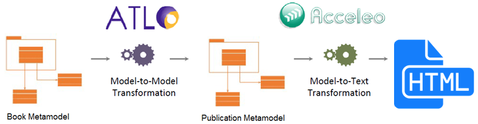
Loading a Transformation in ChainTracker
1. In order to load one or multiple transformations to the environment, click on > Chain Configuration > Load Transformation Chain (Fig. 0). You will see the transformation loader window as presented below (Fig. 1). You can add as many transformations as you want; both ATL model-to-model (M2M) and Acceleo model-to-text (M2T) transformations are accepted by the tool. Once the scripts are loaded, ChainTracker will automatically statically and dynamically analyze their dependencies.

1.1. To load the Book2Publication (M2M) and Publication2HTML (M2T) composition, click > Open, and locate each one of them in the folder examples/m2m and examples/m2t, respectively. You also need to indicate the path of the source and target metamodels for all M2M transformations, and the source metamodel, and model instance for every M2T transformation.

The Overview Visualization
2. Once the transformations have been loaded, ChainTracker will present an “Overview” visualization of the composition. You can click on the edges and the nodes of the composition to obtain details about all the metamodels, transformations, and generated files that correspond to the workspace configured in Step 1 (Fig. 2 – Left) .
Furthermore, the “Code Viewers” will automatically open all the textual files loaded in the configuration. This includes transformations (M2M and M2T) and generated files (Fig. 2 – Right).
Finally, the “Context Tables” will be filled with information as you interact with the visualization. Tables summarize information about the metamodels and the bindings that are connected to their elements (Fig. 2 – Bottom, Fig. 3)

3. By clicking on the nodes of the visualization you can gain access to the coverage analysis of each metamodel. The information includes three main metrics.
- “In Coverage” reflects on the number of metamodel elements that are originated by a transformation in the transformation chain. In Book2Publication the Book metamodel is the root of the composition, hence all its elements are not originated by another transformation (100% uncovered). This allows developers to discover metamodel elements which appearance is not derived from another metamodel.
- “Out Coverage” provides information about the number of elements in a metamodel that are used by a transformation in the composition. In this case, all the elements in the Book metamodel are used in the creation of the Publication metamodel (100% covered). This allows developers to study orphan metamodel elements that are not used and that perhaps need to be deleted.
- “Total Coverage” reflects on the percentage of elements that are neither created nor used by transformations. This information might lead developers to remove unused elements from a metamodel, or to take advantage of their semantic value and include them in them scope of a transformation. Maximizing metamodel coverage makes transformations less convoluted and less error prone while, at the same time, freeing metamodels from unused semantic constructs

4. By clicking on the edges of the visualization you can obtain information about the transformation rules that are contained in a M2M transformation script (Fig. 4.a).
In the case of edges that represent M2T transformations, information about the template modules will be displayed (Fig. 4.b).
Furthermore, in the case of edges that represent generation of files from templates, information about the name of the files will be presented (Fig 4.c).
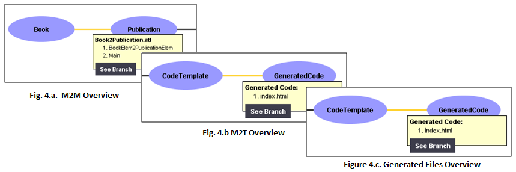
The Branch Visualization
5. By clicking on the > See Branch button, a detailed “branch view” of the transformation composition is presented to the developer. The example used in this guide is a single-branched transformation composition. In the branch visualization, the composition artefacts are represented by the vertical lines. They contain blue boxes that represent different artifacts such as metamodel elements, code templates, and individual generated files (Fig. 5).
In the case of metamodel elements the black dots contained in the boxes represent the element’s properties. Moreover, in the case of templates and generated files each dot represents template file numbers, and code line numbers, respectively.
Finally, the “Context Tables” will be filled with information as you interact with the visualization. Tables summarize information about the metamodels and the bindings that are connected with their elements (Fig. 2 – Bottom, Fig. 3)
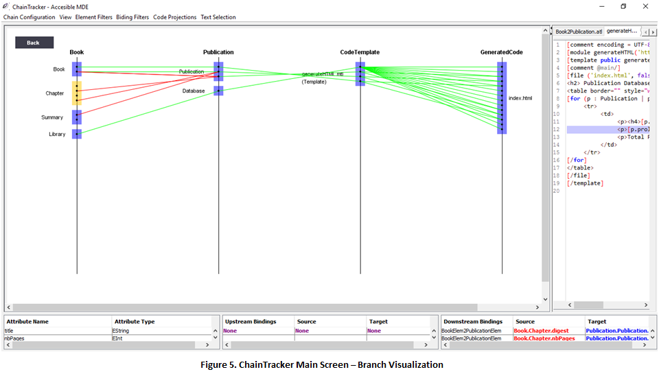
Element Filters
6. In order to see what artifacts relate to a single or multiple metamodel elements, templates, or generated files (blue boxes) you can select them (they will turn yellow) and then click on > Element Filters > See Related Elements.
In order to “clean” the filter, and see the original visualization, simply click twice on a empty place in the visualization.
6.1 Try filtering the related elements of Book!Chapter (Fig. 5.a)
6.2 Clean the selection, and then try filtering the related elements of Publication!Database (Fig. 5.b)
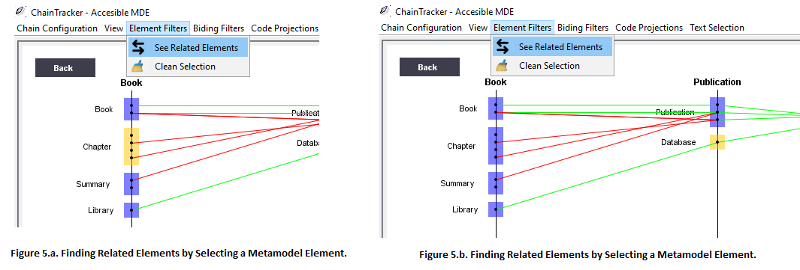
Code Projections
ChainTracker offers a code projection menu where developers can find three types of projections that behave differently depending on the elements selected in the visualization, namely downstream projections, upstream projections and single projections.
7. You can use code projections in order to study the source code of the bindings that originate one or multiple artifacts. For example, select the Book!Book metamodel element > Code Projections > Project Downstream Bindings (Fig. 6).
You will see in the Code Viewer the bindings that are downstream related to a selected metamodel element. Implicit bindings are highlighted in red, explicit bindings are highlighted in green. The target properties are highlighted in blue.
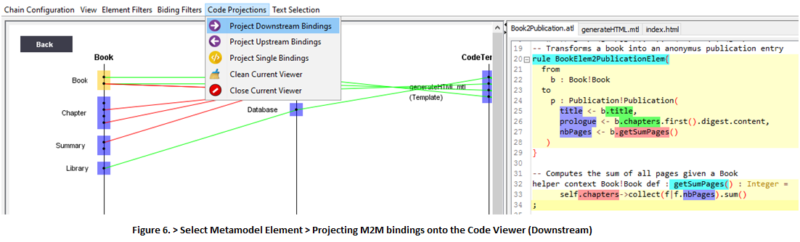
7.1 You can also use Code Projections in order to study the source cde of the bindings that originate a collection of artifacts. For example, select the Publication!Database element > Code Projections > Project Upstream Bindings (Fig. 7).
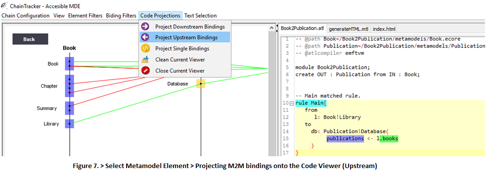
8. Sometimes it is useful to study the source code of a single binding after it has being isolated in the visualization. You can select any binding and see where that binding is located in the script. Simply select a binding > Code Projections > Project Single Binding (Fig. 8).
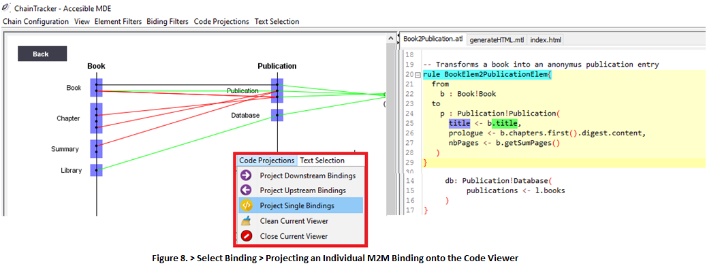
9. Code Projections are not limited to model-to-model bindings. You can study model-to-text bindings to understand how metamodels are used by a template. Select a metamodel element that is used by a template, such as Publication!Publication > Code Projections > Project Downstream Bindings (Fig. 9).
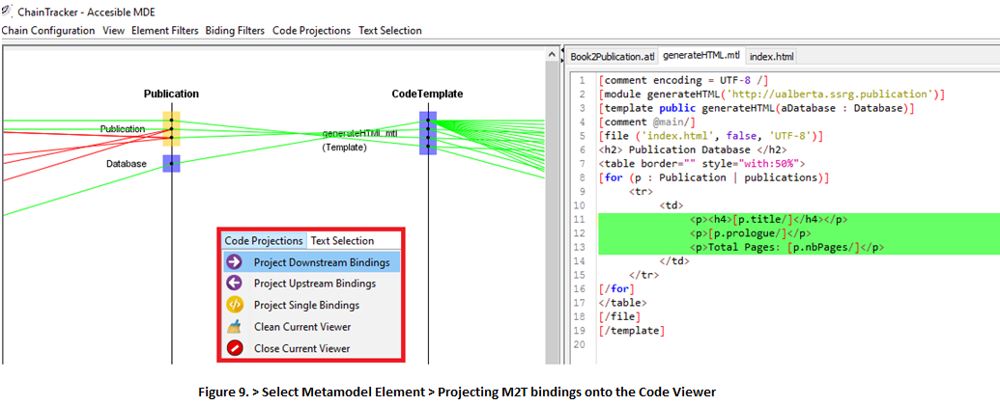
9.1 You can also study individual model-to-text bindings to understand how metamodels are queried or navigated by individual lines in a template. For example, select the only binding coming from Publication!Database > Code Projections > Project Downstream Bindings (Fig. 10).
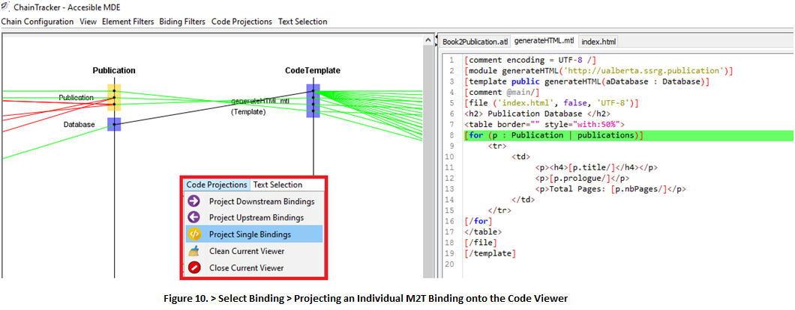
10. So far we have seen how we can use Code Projections to study model-to-model and model-to-text bindings. However, you can also use Code Projections to study generation bindings.
10.1 For example, you can select templates in order to understand what lines of code they generate. This example has only one template, namely “generateHTML”. Select generateHTML > Code Projections > Project Downstream Bindings (Fig. 11).
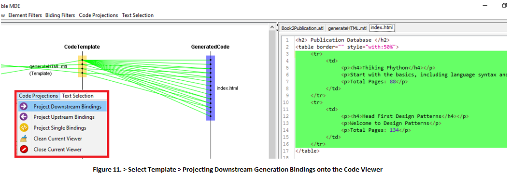
10.2 You can also select individual generation bindings to study what specific line of code they generate. Select any generation binding that originates from "generateHTML" > Code Projections > Project Single Binding (Fig. 12).
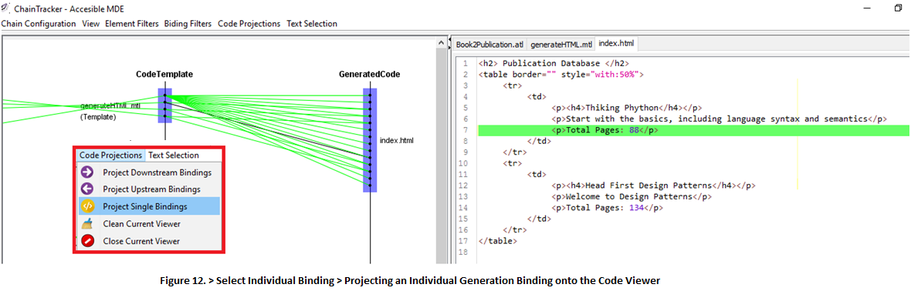
Searching for Bindings Using Text Selection
11. Sometimes it is helpful to look out for bindings inside a template or in a generated file, and then highlight their location in the visualizations provided by the environment. Think of scenarios such as “finding the origins of a generated line of code” or "assesing the impact of platform evolution changes". In ChainTracker you can achieve this by selecting one or multiple lines in a template or in a generated file (using the Code Viewers) in order to see bindings related to them.
11.1 For example, try selecting a few lines of code in the generated file “index.html” > Text Selection > See Upstream Related Elements (Fig 13). Only template lines with binding expressions corresponding to the generation of the selected lines of code will be highlighted.
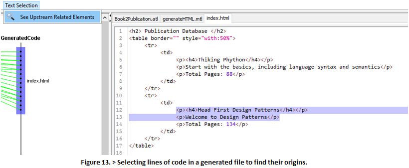
As a result the visualization will also present the related elements and bindings in the context of the selected lines of text. (Fig. 14).
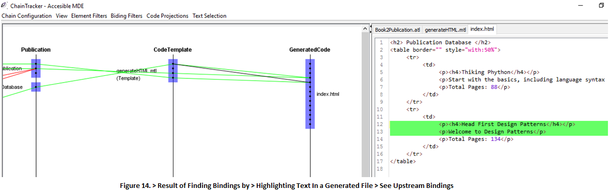
Searching for Bindings Using Text Selection
12. This feature is also available when selecting lines in a code template. This helps developers to understand the metamodel dependencies of a template line considering all the previous (upstream) transformations steps the transformation composition.
12.1 For example, select any line (or a block of lines) in generateHTML > Text Selection > See Upstream Related Elements (Fig. 15)
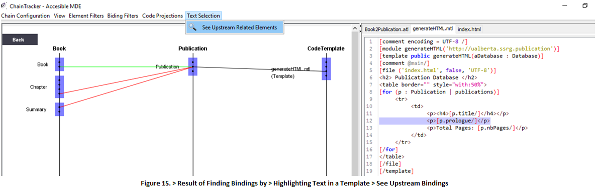